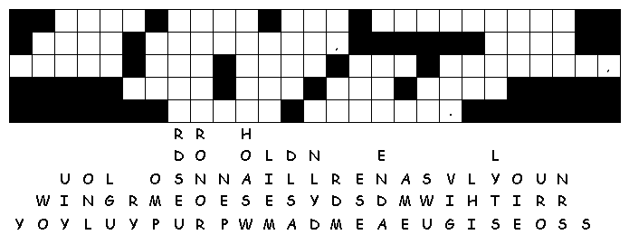
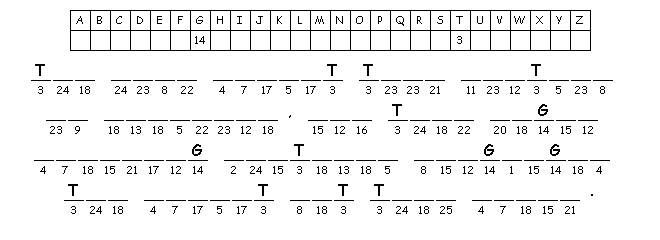

This
week's lessons: Acts
2:1-21 or
Numbers
11:24-30, Psalm
104:24-34, 35b, 1
Corinthians 12:3b-13 or
Acts
2:1-21, John
20:19-23 or
John
7:37-39
Middle-School Pew-work
What
are your spiritual gifts? How can you use them best?
____________________________________________
_______________________________________________________________________________________
_______________________________________________________________________________________
_______________________________________________________________________________________
_______________________________________________________________________________________
_______________________________________________________________________________________
_______________________________________________________________________________________

Next week's
lessons: Genesis
1:1-2:4a, Psalm
8, 2
Corinthians 13:11-13, Matthew
28:16-20
This
week's lessons: Acts
2:1-21 or
Numbers
11:24-30, Psalm
104:24-34, 35b, 1
Corinthians 12:3b-13 or
Acts
2:1-21, John
20:19-23 or
John
7:37-39
Elementary School Pew-work
Use these words to fill in the blanks: country hearing crowd Pentecost directions languages heaven tongues
On the day of ___________ all the Lord's followers were together in one place. Suddenly there was a noise from ___________ like the sound of a mighty wind! It filled the house where they were meeting. Then they saw what looked like fiery ___________ moving in all ___________, and a tongue came and settled on each person there. The Holy Spirit took control of everyone, and they began speaking whatever ___________ the Spirit let them speak. Many religious Jews from every ___________ in the world were living in Jerusalem. And when they heard this noise, a ___________ gathered. But they were surprised, because they were ___________ everything in their own languages.
Where
were the apostles on the day of Pentecost?
____________________________
__________________________________________________________________________
What
drew the crowd together?
_____________________________________________
__________________________________________________________________________
What
did each person in the crowd hear?
____________________________________
__________________________________________________________________________
Questions taken from Sunday School Lessons; http://www.sundayschoollessons.com/baplord.htm

Created by Puzzlemaker at DiscoveryEducation.com
Next week's lessons: Genesis 1:1-2:4a, Psalm 8, 2 Corinthians 13:11-13, Matthew 28:16-20